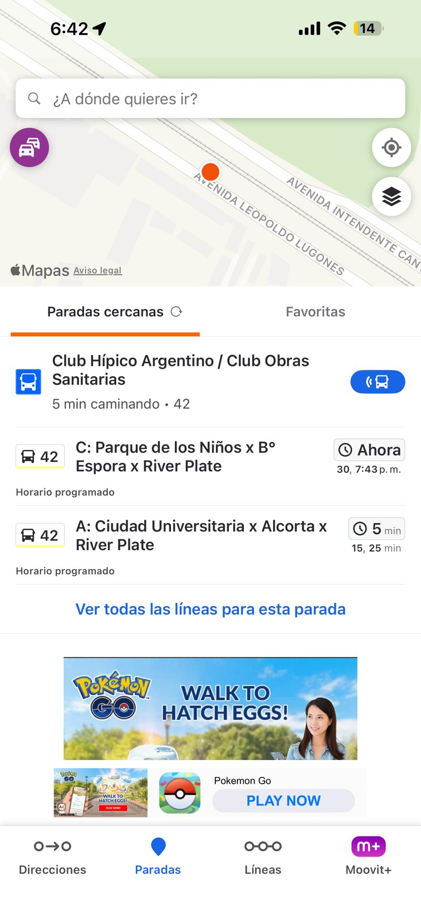

01

Pantalla · ParadasVisibilidad del estado del sistema
CumpleEl sistema debe informar a los usuarios del estado del sistema, dando una retroalimentación apropiada en un tiempo razonable.
Cada línea muestra en tiempo real cuándo pasa el próximo colectivo ("Ahora", "5 min") y los horarios siguientes (15, 25 min), dando al usuario retroalimentación clara y actualizada del estado del sistema de transporte.